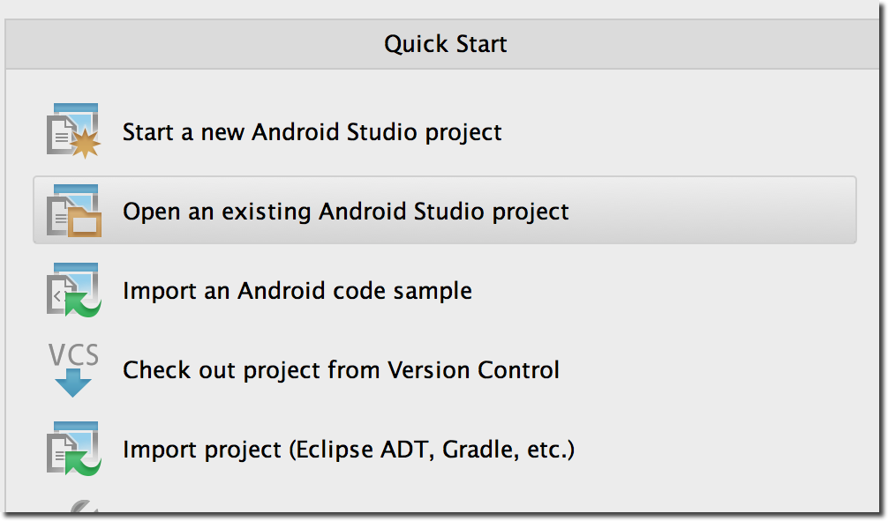

Use the following steps to run the sample app.
-
Download the IMASampleApp from the Android sample app Git repository.
Ooyala Android Sample Apps
-
Unzip the OoyalaIMASDK-Android.zip file to a location on your hard
drive.
-
Open Android Studio and select Open Existing Project.

-
Navigate to the /IMASampleAppfolder and select
Choose.
The Gradle scripts run to set the project in the Android Studio
IDE.
-
Open IMAListActivity.java for editing.
apps/java/com.ooyala.sample/lists/IMAListActivity.java
-
Update the selection map with the embed code for each video required in the app.
This step is shown in the following
example:
selectionMap = new LinkedHashMap<String, PlayerSelectionOption>();
//Populate the embed map
selectionMap.put("IMA Ad-Rules Preroll", new PlayerSelectionOption("EzZ29lcTq49IswgZYkMknnU4Ukb9PQMH", PreconfiguredIMAPlayerActivity.class) );
selectionMap.put("IMA Ad-Rules Midroll", new PlayerSelectionOption("VlaG9lcTqeUU18adfd1DVeQ8YekP3H4l", PreconfiguredIMAPlayerActivity.class) );
selectionMap.put("IMA Ad-Rules Postroll", new PlayerSelectionOption("BnaG9lcTqLXQNyod7ON8Yv3eDas2Oog6", PreconfiguredIMAPlayerActivity.class) );
selectionMap.put("IMA Podded Preroll", new PlayerSelectionOption("1wNjE3cDox0G3hQIWxTjsZ8MPUDLSkDY", PreconfiguredIMAPlayerActivity.class) );
selectionMap.put("IMA Podded Midroll", new PlayerSelectionOption("1yNjE3cDodUEfUfp2WNzHkCZCMb47MUP", PreconfiguredIMAPlayerActivity.class) );
selectionMap.put("IMA Podded Postroll", new PlayerSelectionOption("1sNjE3cDoN3ZewFm1238ce730J4BMrEJ", PreconfiguredIMAPlayerActivity.class) );
selectionMap.put("IMA Podded Pre-Mid-Post", new PlayerSelectionOption("ZrOTE3cDoXo2sLOWzQPxjS__M-Qk32Co", PreconfiguredIMAPlayerActivity.class) );
selectionMap.put("IMA Skippable", new PlayerSelectionOption("FhbGRjbzq8tfaoA3dhfxc2Qs0-RURJfO", PreconfiguredIMAPlayerActivity.class) );
selectionMap.put("IMA Pre, Mid and Post Skippable", new PlayerSelectionOption("10NjE3cDpj8nUzYiV1PnFsjC6nEvPQAE", PreconfiguredIMAPlayerActivity.class) );
selectionMap.put("IMA Application-Configured", new PlayerSelectionOption("EzZ29lcTq49IswgZYkMknnU4Ukb9PQMH", CustomConfiguredIMAPlayerActivity.class) );
\u0000
-
Open PreconfiguredIMAPlayerActivity.java for editing.
app/java/com.ooyala.sample/players/PreconfiguredIMAPlayerActivity.java
-
Replace the PCODE with your Ooyala-supplied provider ID code. For
details, see Your API Credentials.
This step is shown in the following code
sample:
public class PreconfiguredIMAPlayerActivity extends Activity implements Observer {
public final static String getName() {
return "Preconfigured IMA Player";
}
final String TAG = this.getClass().toString();
String EMBED = null;
final String PCODE = "R2d3I6s06RyB712DN0_2GsQS-R-Y";
final String DOMAIN = "http://ooyala.com";
protected OptimizedOoyalaPlayerLayoutController playerLayoutController;
protected OoyalaPlayer player;\u0000
Note: Leave
new PlayerDomain(DOMAIN) unchanged as
http://www.ooyala.com. This constant works in conjunction with
Syndication Controls (publishing rules) in Backlot. If you have set Internet domain restrictions on videos in Backlot (see the Backlot User
Guide), the constant here can be set to one of those allowed domains. If you have
not set these Syndication Controls, the constant has no effect.
-
Save your changes.
-
Click the play button to see the app run in the Android Studio emulator.